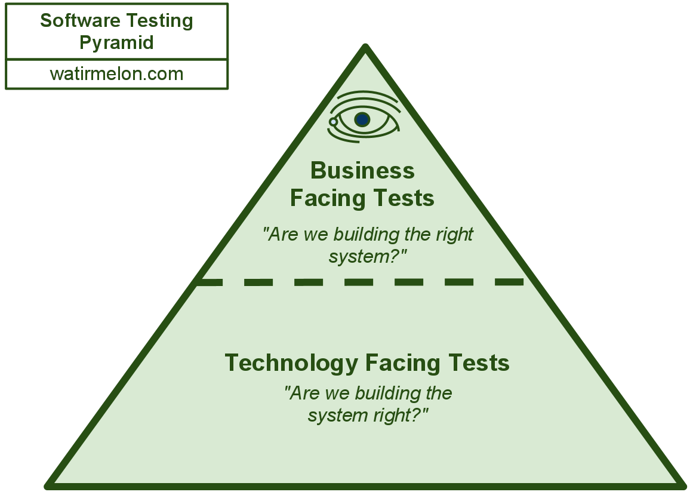

Про Тестирование
Артем Десятников
Программа работает хорошо?
- посмотреть на код
- протестировать ее работу
Протестировать вручную
Самый интуитивный метод
Иногда нельзя иначе
AI

Обработка картинок
Автоматические тесты
- быстрые
- документируют
- человек не нужен

Автоматические тесты
Минусы
- долго писать
- плохо имитируют поведение человека
Ошибки классификации
Первого рода — посчитать плохую программу хорошей
- неожиданный сценарий
- неожиданное рабочее окружение (браузер, сервисы)
Второго рода — посчитать хорошую программу плохой
- слишком сложные тесты
- устаревшие тесты
- неожиданное тестовое окружение
Конфликт
Простота. Юнит-тесты
Тестирование минимальных кусочков приложения по-отдельности.
Надо сделать их независимыми
Пример TODO-MVC
Плохой пример номер раз
```cs
class TodoList {
private TodoItem[] items;
public TodoList() {
this.items = Db.GetTodoItems();
}
}
void MainLogic() {
var list = new TodoList();
Render(list);
}
```
Плохой пример номер раз
```cs
class TodoList {
private TodoItem[] items;
public TodoList() {
this.items = Db.GetTodoItems();
}
}
void Test() {
var list = new TodoList();
???
}
```
Dependency Injection
Исправленный пример номер раз
```cs
class TodoList {
private TodoItem[] items;
public TodoList(TodoItem[] items) {
this.items = items;
}
}
void MainLogic() {
var db = new Db("login", "pass", catalog: "items");
var items = db.GetTodoItems();
var list = new TodoList(items);
Render(list);
}
void Test() {
var list = new TodoList(new[] { new TodoItem() { Text = "Первая тудушка", Done = false } });
var rendered = Render(list);
Assert.That(rendered, Contains.Substring("Первая тудушка"));
}
```
NUnit
```cs
[TestFixture]
public class TodoListTest
{
[Test]
public void HasNothingToDoWhenEmpty()
{
var list = new TodoList(new TodoItem[] {});
Assert.That(list.HasSmthToDo, Is.False);
}
}
```
Mocha + Chai
```js
describe("todo list", () => {
it("has nothing to do when empty", () => {
let list = new TodoList([]);
expect(list.hasSmthToDo).to.be.false;
});
});
```
Семантичные Assert-методы
NUnit
```cs
Assert.AreNotEqual(5, 2 + 2);
// vs
Assert.That(2 + 2, Is.Not.EqualTo(5));
Assert.That(SomeMethod, Throws.TypeOf()
.With.Property("Parameter").EqualTo("myParam"));
```
Плохой номер два
```cs
class Db {
...
public TodoItem[] GetTodoItems() {
return new DbConnection(login, password, catalog)
.Query("select * from todos")
.Select(row => new TodoItem
{
Text = row["text"],
Done = row["done"] == "1"
});
}
public void SaveTodoItems(TodoItem[] items) {
new DbConnection(login, password, catalog)
.Query("insert or update items " + ...));
}
}
```
Dependency Inversion
Исправленный пример номер два
```cs
class Db {
private IDbConnection connection;
...
public TodoItem[] GetTodoItems() {
return connection
.Query("select * from todos")
.Select(row => new TodoItem
{
Text = row["text"],
Done = row["done"] == "1"
});
}
public void SaveTodoItems(TodoItem[] items) {
connection.Query("insert or update items " + ...);
}
}
```
Dependency Inversion
Исправленный пример номер два. Тест
```cs
class TestEmptyConnection : IDbConnection {
public RowSet Query(string query) { return new RowSet(); }
public void Dispose() {}
}
[Test]
void AllDoneWhenListIsEmpty() {
var db = new Db(new TestEmptyConnection());
Assert.That(db.GetTodoItems(), Is.Empty);
}
```
Исправленный пример номер два. FakeItEasy
```cs
[Test]
void DbYieldsEmptyItemListWhenRowSetIsEmpty() {
var fakeConnection = A.Fake();
A.CallTo(() => fakeConnection.Query("select * from todos"))
.Returns(new RowSet());
var db = new Db(fakeItemProvider);
Assert.That(db.GetTodoItems(), Is.Empty);
}
```
Интеграционный тест
```cs
new MainLogic(new Db(fakeConnection));
```
Затычки на каком-то уровне. Поверх - настоящая логика
Single Responsibility
```cs
class DbUtils {
public TodoItem RowToTodoItem(Row row) { ... }
public string ToUpdateQuery(TodoItem[] items) { ... }
}
[Test]
void RowToTodoItemConvertsSimpleRow() {
var row = new Row();
row.Add("done", "0");
row.Add("text", "hello");
var todoItem = DbUtils.RowToTodoItem(row);
Assert.That(todoItem.Text, Is.EqualTo("hello"));
Assert.That(todoItem.Done, Is.False);
}
```
Чистые функции. Декомпозиция.
End-To-End тесты
Тестирование в браузере